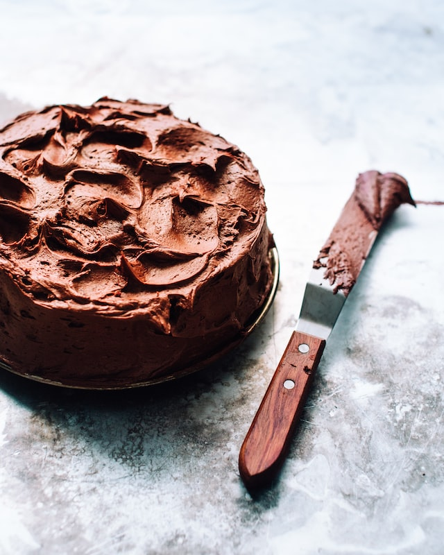

Receita de Bolo de Chocolate com Ganache de Cacau
Ingredientes:
1 e 1/2 xícara(chá) de farinha de trigo
1 e 1/2 xícara(chá) de açúcar
1 xícara(chá) de leite
1 xícara(chá) de Óleo
2 ovos
1/2 xícara(chá) de amido de milho
1 colher(sopa) de fermento em pó para bolo
3 colheres(sopa) de chocolate em pó
1 xíc. de castanha de cajú
1/2 xíc. de tâmaras sem caroço
1 c.s. bem cheia de cacau em pó
1 c.c. de essência de baunilha
Modo de Preparo:
Em uma tigela misture o leite, os ovos e o óleo misturando tudo muito bem.
Adione o açúcar, o amido de milho e o chocolate em pó aos poucos, até que fique homogêneo.
Vá adicionando a farinha de trigo aos poucos e mexa bem até agregar tudo a massa.
Coloque o fermento em pó e misture delicadamente.
Trasfira a massa para uma forma untada e leva ao forno pré aquecido em 180 graus por 45 minutos.
Após este tempo, aguarde o bolo esfriar e desenforme
Para preparar o Ganache, comece deixando as castanhas de cajú e as as tâmaras de molho em água filtrada por 12 horas (cada um em uma xícara).
12 horas depois, coloque no liquidificador as castanhas com a água e as tâmaras escorridas (reserva o copo de água das tâmaras).
Bata as castanhas e as tâmaras bem até formar um creme bem lisinho. A consistência da ganache depende da quantidade de água do molho das tâmaras que você adicionar, por isso, adicionar aos poucos.
Adicione no liquidificador o cacau em pó e a essência de baunilha. Caso precise usar a ganache mais consistente, deixar na geladeira por 1 hora.
Após o Ganache estar consistente, cubra o bolo uniformente.
Informações Adicionais
Para harmonizar sirva o bolo com café coado ou vinho branco(o alcool promove o equílibro do doce do bolo)